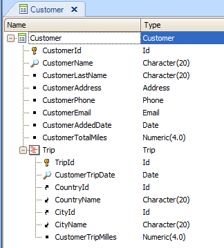

GeneXus always determines that a transaction rule be triggered on the first opportunity possible, that is, upon having all data involved in the rule definition. The attributes involved in a rule "tell" GeneXus the triggering level. For example, if a rule only references attributes of the first level of a transaction (either in the rule itself or in the triggering condition), then GeneXus will understand that the rule is associated with the tansaction's first level (and it will be triggered as soon as there are values for all data referenced in the rule). Likewise, when a rule only references attributes in the second level of the transaction (either in the rule itself or in the triggering condition), then GeneXus will understand that the rule is associated with the transaction's second level. This means that the rule will be executed for each line in the second level (as soon as there are values for all data referenced in the rule). If a rule references attributes from different levels, GeneXus understands that the rule is associated with the last nested level, the only location where all referenced attributes have values. The rule will be executed for each instance in the last level. Examples 1) If the following rule is defined in the above transaction: Default(CustomerAddedDate, &today); ...since the only attribute mentioned in the rule is CustomerAddedDate, which is an attribute from the transaction's first level, then GeneXus will determine that this rule is associated with the first level. 2) If the following rule is also defined in the above transaction: Add(CustomerTripMiles,CustomerTotalMiles); ...since the two attributes mentioned in this rule are in the transaction's second level, then GeneXus will determine that this rule is associated with the second level. So this Add rule will be executed for each line in the second level. What triggering level will be associated by default with a rule where no attributes are referenced? If no attributes are involved in a rule, then the level associated by default with that rule will be the first level. For example, the rule below, defined in the above transaction: Error(‘Customers cannot be deleted’) if delete; ...involves no attributes, so, by default, the first level will be associated with the rule. This means that when user tries deleting a customer, the condition turns to True, and the error text will be displayed, and the customer will not be deleted. Note that the rule will not be triggered if user tries to delete a line with a trip, and this is because the rule is asociated with the first level. ScopeObjects Transaction object See alsoLevel clause for transaction rules
|
| Backlinks |
| AfterValidate Triggering event |